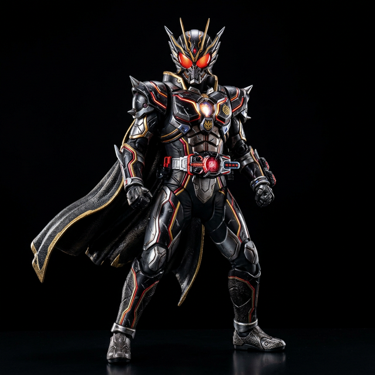

Perfil do Personagem
TAKESHI HONGO
Takeshi Hongo é um brilhante estudante universitário e entusiasta de motocicletas que foi sequestrado pela organização terrorista maligna Shocker. Transformado em um ciborgue, ele escapou antes que sua lavagem cerebral fosse concluída e passou a lutar pela liberdade da humanidade como Kamen Rider 1.
CIBORGUE
Espécie
1971
Ano de Estreia

Role